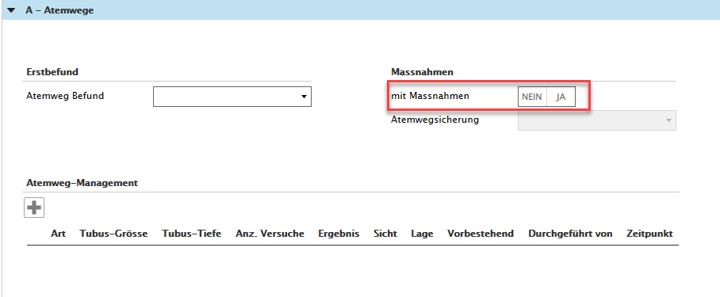
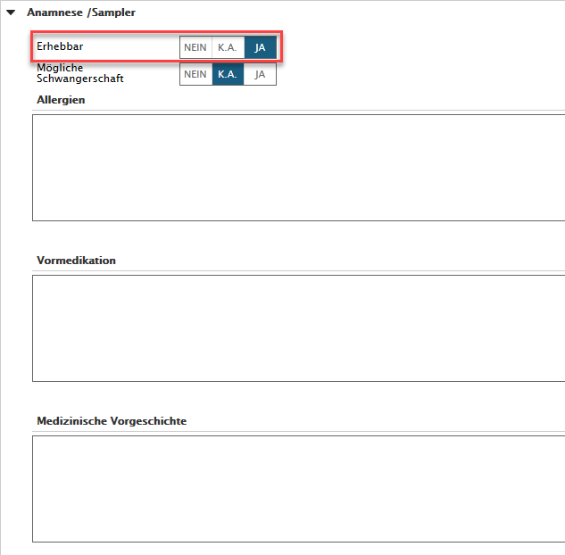
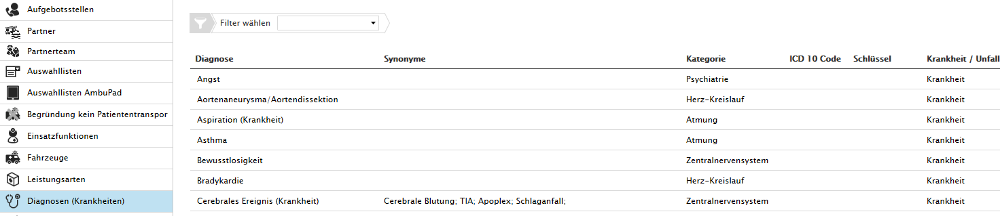
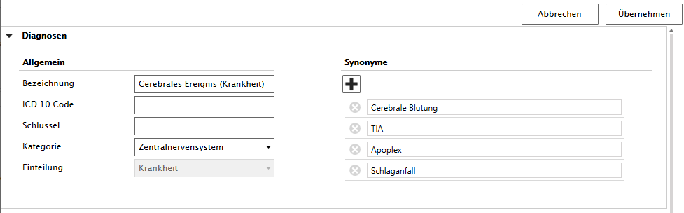

*** What's New in V1.22.x ***
Dateiverwaltung - Upload optimiert bis max. 500 MB
Die Upload-Funktion ist optimiert worden, neu können Dateien bis max. 1.5 Gigabyte ins Sanostat Evo hochgeladen werden.
Einsatzerfassung - Renaming 'Einsatz umhängen' und 'Patient umhängen'
Das Naming ist angepasst worden. Neu heissen die Buttons 'Einsatz neu zuordnen' und 'Patient neu zuordnen'.
Mehr dazu erfahren Sie unter Einsatz an Ereignis neu zuweisen und Patient zu Einsatz neu zuweisen
Einsatzerfassung - Neuer Boolean 'mit Massnahmen' JA/NEIN implementiert
In den Akkordeons der Medizinischen Daten von A bis D ist der Boolean 'mit Massnahmen' implementiert worden, siehe zum Beispiel A-Atemwege:

Einsatzerfassung - Neuer Trislider 'Erhebbar' unter 'Anamnese/Sampler'

Stammdaten - Diagnosen für Krankheiten in den Stammdaten verfügbar
Sämtliche Diagnosen für Krankheiten sind in den Stammdaten von Sanostat Evo integriert und können von den User mit der Rolle "Stammdatenverwaltung" verwaltet werden.

